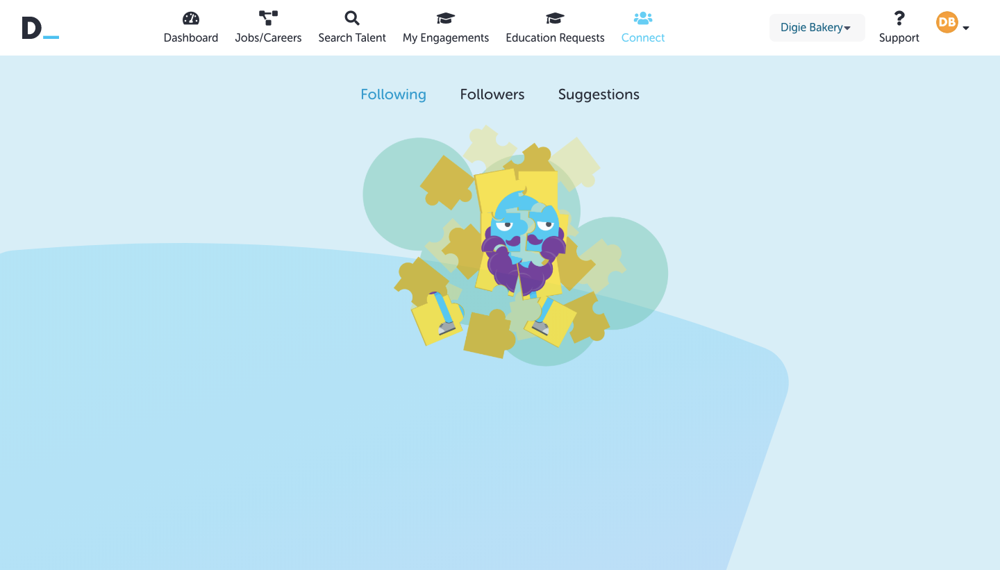

Summary
Digital Profile is a CV and Careers platform that aims to change the world of recruitment, by aiming to replace the CV, free job postings for businesses and employers, and also by offering low cost applicant tracking. It was founded in 2015 as a startup Busines which is based in Cardiff.
Brief
To create multiple banner assets for the Digital Profile website. An example would be that on the dashboard for the user, it will need an illustrated banner asset when there are no job matches on the dashboard - indicating that the user needs to add more skills in order to gain more job matches. This adds more excitement and life to the website as a whole. The digies will be utilised, as its essentially the bread and butter of Digital Profile as a brand.
The Digies
The Process
Solution
No Matches

When users (Individual) has no job matches in their dashboard, so they need to add more skills in order to do so. I mainly took inspiration from the mix and match toy, and replace it with the digies in their corresponding career uniforms to visually illustrate the word “Matches”
Career Search
When the user search something on career search but nothing comes up. This means there are simply no jobs available, that are related to whatever the user has searched. The cogs being caught by the magnet symbolises “searching for what you’re looking for”.
No Followers / Following
Posting a request/engagement (Business)
This is when the business wants to post a request/engagement on the site, but they haven’t made any requests/engagements previously so a banner asset appears in its place. The asset consists of Digie making a “request" over a phone booth.
Posting a Career (Business/Education)
This is when the business or the Education provider hasn’t made a Career posting yet, so the banner asset is in place instead. The packaged box with the digies in their uniform literally translates “to posting a job”
Education to a Business Request
This is when an Education provider hasn’t made any requests for any businesses or companies, so a banner asset is in place. The asset is Toby Blue Nose demanding for a “request"